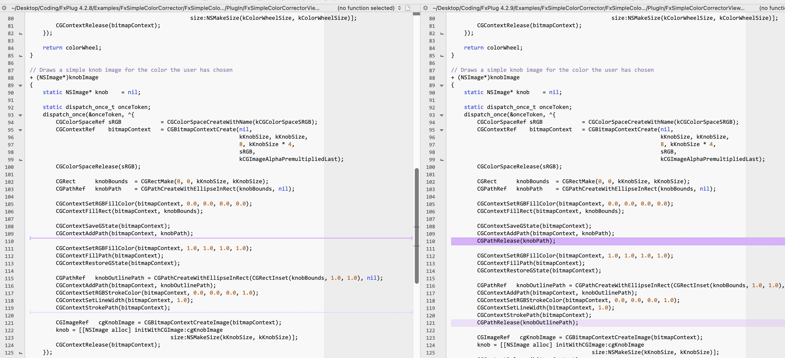

#
FxPlug
This section of the site is dedicated to FxPlug.
You can find the official FxPlug 4 documentation here.
If you want a real-world example of a FxPlug 4 application, you can look at Gyroflow Toolbox.
#
Frequently Asked Questions
#
Objective-C or Metal?
There is a lot more documentation and sample code for Objective-C.
Whilst Apple has put a lot of time into making FxPlug more Swift-friendly, there's still only one basic sample project (FxBrightness), and no example of how to use Swift UI as Custom Parameters, etc.
We are actively talking to Apple about how they can improve FxPlug for Swift and Swift UI Developers.
It's also worth looking at FxKit for inspiration and ideas.
#
Why does my Viewer turn red on Intel?
If you're using OSC controls via FxPlug, even if you're not drawing something to the screen, you still need to provide a valid texture, otherwise you can get an red overlay across the entire Final Cut Pro Viewer, even if your effect/title/generator/transition is disabled.
#
Can I change a ParameterSubGroup Name via code?
No, currently it doesn't seem possible. See bug report here.
Apple confirms:
The dynamic parameter API doesn’t do what you want in FCP. This is a known limitation. I thought we had documented this somewhere, but I’m not finding it.
Basically, the problem is that using the dynamic parameter API changes the underlying Motion document data. In Motion, the user simply saves the project and it’s fine. But in FCP there’s no way for the user to save the Motion Template, nor would they want to, since it would change all instances of the plug-in in all projects.
#
Does the UndoAPI work in Final Cut Pro?
Yes, Apple confirms:
Yes, the Undo API should work in Final Cut Pro. (That comment in the header may be very old - from FCP 7, I think.) When are you trying to use it? It should work within a start/endAction: block, as well as during -parameterChanged::, and also during the selector for a push button and during OSC mousing and analyzing a frame. It will not work at other times.
#
FxPlug Crashes
Final Cut Pro will automatically restart any FxPlug that crashes.
However, if a plugin crashes 3 times within 30 seconds, Final Cut Pro will stop using that plugin all together and display a "Plugin has stopped responding" message.
You can find crash logs in the usual ~/Library/Logs/DiagnosticReports folder.
#
Terminal Commands
You can use the pluginkit Terminal command to check for FxPlug's.
To list all your FxPlug's by bundle identifier use:
pluginkit -m -p FxPlugYou can combine with grep to easily check if a plugin is installed:
pluginkit -m -p FxPlug | grep "BRAWToolbox"If you need more information about a plugin:
pluginkit -mv -p FxPlug | grep "BRAWToolbox"You can learn more about pluginkit here.
#
Wish List
Here is a collection of things we'd LOVE to see Apple address in FxPlug:
- Ideally, there should be some new methods added to FxTimingAPI_v4 so that we can access the current timecode of the source clip, but also a frame number for connivence. For example, if we have a ProRes File that starts at 01:00:00:00, if we apply our Effect/FxFilter to that ProRes File within Final Cut Pro, for the first frame of the video, we should be able to use FxPlug4 to return the CMTime equivalent of 01:00:00:00, but also frame 0. This would allow Gyroflow Toolbox to be applied like a normal effect, rather than having to contain it within a container clip, like a Compound Clip. Discussed here.
- Can't change ParameterSubGroup Name in parameterChanged. Discussed here.
#
Third Party Frameworks
Here is a collection of useful third party frameworks.
#
FxKit
An open-source (MIT License) Swift implementation of FxPlug plugins for Final Cut Pro and Apple Motion.
#
Release Notes
Here is the release notes for FxPlug. Where appropriate, we try and add additional information and context below.
#
FxPlug 4.2.9
Released: 30th November 2023
- IMPORTANT: Xcode 15 is now required to build FxPlug plug-ins.
- A new
-projectAspectRatio:error:method inFxProjectAPI_v2.
You can learn more here.
- The
FxBrightnessAnalysisexample has been updated to optionally perform backward analysis, image well analysis, and GPU analysis. - Improved overall stability.
- Improved the speed of analysis cancellation.
- Fixed an issue in
-timelineTime:fromImageTime:forParameterID:that had caused an incorrect time to be returned astimelineTime. FxColorGamutAPIcan now be instantiated from within-parameterChanged:atTime:error:FxProjectAPIcan now be accessed during a push button callback.- Fixed a leak in the
FxSimpleColorCorrectorexample plug-in.
This is the fix:

- Fixed an issue that would cause a hang in Motion when multiple instances of the same plug-in were applied to an object.
- Fixed an issue that would cause generated output to be composited on frames requested by the
FxAnalysisAPIandFxTimingAPIwhen a plug-in was applied to a title template’s Title Background layer. - Fixed an issue that could cause a crash when analyzing very large inputs in effect templates that had relatively small project dimensions.
#
FxPlug 4.2.8
Released: 19th September 2023
- Removal of unsupported FxPlug 3 properties from the FxPlug framework
- Support for GPU and backwards analysis in the FxBrightnessAnalysis example
- Plug-ins built with newer SDKs now handle canceling of analysis without crashing in older hosts.
- The template and example properties have been updated to conform to the removal of some FxPlug 3 properties. This includes the
kFxPropertyKey_UsesRationalTimeandkFxPropertyKey_IsThreadSafeproperties. - Fixed an issue when an FxPlug 4 plug-in with custom UI displayed in the inspector crashed, or was terminated by the OS. It will now redraw its custom controls immediately rather than waiting until the next communication with the plug-in.
- Fixed an issue with a potential crash when using the
FxColorGamutAPI. - Analysis no longer returns frames with a 1-pixel border around them.
Known Issues:
FxFactory writes:
Final Cut Pro 10.6.9 is now available on the Mac App Store. This version breaks all FxFactory products that perform object tracking or face recognition through the Title layer.
Regrettably this constitutes the entirety of our catalog featuring object tracking or face detection, since developers and users alike have come to favor the Title layer for its flexibility.
Because of the large number of products affected, we recommend that you do not apply this update.
Read more about this bug here.
#
FxPlug 4.2.7
Released: 18th July 2023
- Improved reconnection of Plug-ins after crash.
- Fixed an issue with the Motion hanging when a 3rd party plug-in crashes.
#
FxPlug 4.2.6
- Improved stability and reliability
- Removal of unsupported FxPlug 3 APIs from the FxPlug framework
- Fixed an issue where the
Fx3DBoxexample plug-in would fail to build. - Fixed an issue where only one push button would be available when using the
FxSimpleColorCorrectorexample plug-in. - Fixed an issue where an older method was used for interpolating custom parameters.
- Fixed an issue with Full Width parameters being clipped on the right after reloading a project in FCP.
- Fixed an issue where a plug-in could start two analyses without the app realizing it.
- Fixed an issue where, in some cases, the
FxOnScreenControlAPI-objectBoundsmethod could return an incorrect cached value. - Fixed an issue where an FxPlug plug-in accessing multiple lights in a scene could cause a crash.
- Fixed a leak of
IOSurfaces in theFxAnalyzerwhen the plug-in canceled analysis. - Fixed a potential leak of OpenGL contexts during analysis.
- Fixed a caching error when analysis was canceled.
- Fixed an issue with 3rd party plug-ins being restricted to rendering in Rec709 when Automatic Color Processing was enabled in a Motion project or template.
- Fixed a crash when scheduling frames for image wells.
- Fixed an issue with the 3D API where changes to the camera did not always cause the plug-in to re-render.
- Fixed an issue with
FxColorGamutAPIaccessing previously-freed memory. - Fixed an issue where analysis tasks canceled by the plug-in would remain in memory and block further analysis from happening.
- Fixed an issue where undoing a text change in a template that uses an FxPlug plug-in would cause a crash.
- Fixed an issue where an effect source layer used as the input to a generator image well would restrict the image well input to the template’s dimensions.
#
FxPlug 4.2.5
- Improved stability and reliability
- Improved reconnection with plug-ins after a memory jetsam event.
- Improved the speed of reconnection with plug-ins after a crash, or plug-in process suspension by macOS.
- Improved the performance of image well inputs.
#
FxPlug 4.2.4
- Improved stability and reliability
- Fixed a potential hang when a plug-in called -startAction:.
- Fixed a potential crasher when a plug-in's window was open and the document was closed or the application was quit.
- Fixed a memory leak that could occur when retrieving frames at other times.
- Ensured that the analysis state is set properly if the plug-in returns
NOfrom-desiredAnalysisTimeRange:forInputTimeRange:error: - Fixed a large memory leak when retrieving image well images with zero opacity or of zero size.
- Ensured that
-layerMatrixAtTime:error:returns a transform that includes its ancestors' transforms. - Fixed an issue where the frames returned for analysis could be the wrong size.
- Fixed leak of a small empty image when an image well had no media in it.
- Fixed an issue of the application hanging when deleting an instance of an FxPlug plug-in which had ongoing analysis.
- Fixed an issue where custom views were sometimes not created properly for plug-ins that had numerous custom views.
- Improved the speed of custom parameter creation.
- Fixed an issue with Final Cut Pro unable to close the application window while FxPlug analysis was in-progress.
- Fixed a performance issue when using image references with Drop Zones.
- Fixed a crash triggered by dragging an effect to Motion’s Favorites.
- Fixed a memory leak that affected Apple Silicon Macs.
#
FxPlug 4.2.3
- Introduced
FxRemoteWindowAPI_v2with a new method for setting the minimum and maximum size of remote windows - Images retrieved from image wells in transitions will now have the proper image origin.
- The reply block for calls to
-[FxRemoteWindowAPI remoteWindowOfSize:]will now always be run on the plug-in's main UI thread. - Improved loading time of custom views in the host app's inspector.
- Changes to parameters made by OSCs will now be properly recorded in the host's undo stack.
- Fixed a leak of onscreen control objects in the host.
- Fixed a crash when deleting a plug-in that had an active analysis session running.
- The
FxColorGamutAPIshould now be available during analysis. - The
FxTimingAPIshould now be available and give correct results during-pluginInstanceAddedToDocument. - Fixed an issue with display of the blocked/legacy plug-in warning.
- Improved undo stack management for bulk changes to multiple parameters.
- Minor changes made to the FxPlug template and examples to improve Metal rendering.
- Improved how
FxRemoteWindowAPIhandles window resizing. - Improved behavior of rigged parameters.
- Filters can now use
FxAnalysisAPI_v2methods to analyze image parameter inputs. kFxCommand_UndoandkFxCommand_Redocommands now function from remote windows created in Final Cut Pro.- Fixed an issue with adding a path to a path picker.
- Improved behavior of show/hide properties of parameters that have a dependency on another parameter.
- Undo group names are now used in the undo queue.
- Fixed an issue with
-setPopupMenuParameter:entries:defaultValue:not updating pop-up menu entries in Final Cut Pro. - Improved performance of the
FxAnalysisAPIwhen analyzing HEVC and H.264 clips in Final Cut Pro.
#
FxPlug 4.2.2
- Introduced
FxParameterSettingAPI_v6, which adds two new methods,-addFlags:toParameter:and-removeFlags:fromParameter:, for simplified parameter flag management - Introduced
FxAnalysisAPI_v2with two new methods-startForwardAnalysis:ofParameter:error:and,-startBackwardsAnalysis:ofParameter:error:to analyze input from image reference parameters - Improvements to performance of
FxAnalysisAPI. - Setting float parameters during analysis should cause OSCs to be updated.
- Fixed an issue where putting a Motion object into an image well in a template could cause Final Cut Pro to crash.
- The Timing API should now work properly when called from a custom view's
-drawmethod. - Misusing
-startAction:/-endAction:will now log a message to the console and the call will do nothing. - Times sent to OSC methods in Final Cut Pro should be correct now.
- Fixed an issue with
FxParameterSettingAPInot setting a parameter successfully from within the body of a method associated with a push button. - Fixed an issue with onscreen control temporal drift when setting keyframes while dragging an OSC object.
- Fixed an issue with
-analyzeFrame:atTime:error:not being called from a custom UI control. - Fixed an issue with app bundle identification when rendering FxPlug 4 in Compressor.
- Fixed an issue with setting parameter flags in a generator when the host is processing an undoable operation.
FxImageTiles should now be properly marked as having their origin in the top left or bottom left in all cases.- When a plug-in sets the
kFxPropertyKey_NeedsFullBufferproperty, the apps should now always provide a fully buffered set of inputs and outputs, even if the entire canvas is not showing. - Images over 4,000 pixels on a side should no longer cause issues with transitions in Final Cut Pro.
-parameterChanged:atTime:error:should be called less frequently during undo and should be called when a plug-in changes a parameter.- When a rigged FxPlug parameter is changed by the rig, the canvas will now properly update.
#
FxPlug 4.2.1
FxRemoteWindowAPIallows a plug-in to create a window within Final Cut Pro or Motion and populate it with a custom view- Push button and help selectors no longer take an argument, which allows them to be properly called in Swift. This means you’ll need to update the selectors you previously sent to
-addPushButtonWithName:parameterID:selector:flags:. - Changes to parameters are more consistent during onscreen control operations. Also, a series of changes from a mouseDown, through several mouseDragged events, and a mouseUp event will now automatically be treated as a single undoable event. There should be no need to use the
UndoAPIduring OSC usage. - The
FxRemoteWindowAPIwill only allow one window to be created per plug-in instance. TheFxSimpleColorCorrectorexample has been updated to use the-displayWindow:method. -setupAnalysisForTimerange:frameDuration:error:now provides field duration instead of frame duration for interlaced timelines. Progressive timelines remain unchanged.- The
FxAnalyzerinputTimeRangeno longer includes additional frame handles.
#
FxPlug 4.2.0
FxPlug.frameworkis now a universal frameworkFxCommandAPI_v2allows a plug-in to move the host’s playhead to an arbitrary timeFxProjectAPIretrieves the URL of the plug-in data folder within a Motion project’s folderFxParameterRetrievalAPI_v7adds a method for retrieving the image information about an image parameter- New method
-pluginInstanceAddedToDocumentadded toFxTileableEffectto track open documents in the host app - New
kFxParameterFlag_USE_FULL_VIEW_WIDTHflag for parameters to use full width of the inspector - The FxShape example’s OSC has been made thread-safe
- The macOS deployment target for the plug-in examples has been updated to 10.15
kFxError_UserCancelledadded forFxAnalyzerfor when you want to stop analysis, but don't wish to display an error alert to the user- Motion now warns users when it does not load 3rd party in-process FxPlugs on Apple Silicon
kFxParameterFlag_HIDDENnow works with custom parameters
Known Issues:
- The
FxDynamicRegistrationexample may display deprecation errors forFxOpenGLContextCache.m. This is expected when building with recent macOS SDKs because OpenGL has been deprecated. This example is included for Metal comparison purposes.
#
FxPlug 4.1.0
FxAnalysisAPIallows frame-by-frame analysis of source video in both Final Cut Pro and Motion- FxPlug 2 and FxPlug 3 are deprecated
- Improved performance of enabling and disabling parameters
- Introduced
Fx3DAPI_v5and deprecatedFx3DAPI_v4 - New
FxCommandAPIcan instruct the host application to perform commands - Dynamically registered plug-ins’ plist requirements have changed for FxPlug 4.1 and the FxDynamicRegistration example has been updated.
- Some FxPlug example projects have revised names that include the prefix “Fx”.
FxBrightnessexample and Swift template have been updated to Swift 5.- FxPlug now ships as a sparse SDK, which requires you to make some small changes to the search paths of your plug-in in the Xcode project. This includes modifying the Additional SDKs (
ADDITIONAL_SDKS) setting to include/Library/Developer/SDKs/FxPlug.sdk, and replacing the current Framework Search Paths setting (FRAMEWORK_SEARCH_PATHS) with/Library/Frameworks $(inherited)in the Build Settings of the Xcode project. - You can receive the host's identifier and version with the new
FxPrincipalDelegateprotocol. - Plugins are called to do work on background threads, and AppKit should never be used when running on a background thread. This may raise an exception, which will cause your plug-in to crash if your plug-in doesn’t catch it. All UI work should be done on the main UI thread. If you need to display an alert or window but are running on a background thread, you can use:
dispatch_async(dispatch_get_main_queue(), ^(){…});or:[self performSelectorOnMainThread:…];These will both run your code on the main UI thread at some later time. - New
Fx3DBoxexample demonstrates how to use the newFx3DAPI_v5 - Motion templates containing missing FxPlugs will now display an error rather than rendering
FxImageTiles now include aCGColorSpaceRefdescribing the color space they are in- FxPlugs with windows can instruct the app to perform specific commands when the user presses a key combination for that command
PluginManager.frameworkis now copied to the bundle and code signed with a script in the FxPlug examples and FxPlug templatesViewBridgekeys added to plists for the FxPlug examples and FxPlug templates- Improved responsiveness for OSCs and custom UI
Known Issues:
- The error “‘FxPlug/FxPlugSDK.h’” will occur after installing FxPlug 4.1 and attempting to build an FxPlug 4.0 or older plug-in. This is a result of the FxPlug SDK switch to a sparse SDK and can be easily remedied by changing the SDK and framework search locations in your plug-in’s Xcode project. See the release notes above for details.
#
FxPlug 4.0.0
- FxPlug plug-ins run sandboxed and out-of-process for improved stability and security
- Plug-in developers can control the rendering technologies and languages they use, including Metal and Swift
- The new FxTileableEffect API allows plug-ins to render only the required portions of an effect for improved efficiency
- The FxEyeType property indicates if Final Cut Pro X is currently rendering the left or right eye of a 360° Stereoscopic project
- Plug-ins written in the FxPlug 4.0 style should use the latest protocol versions available as many of the new protocols do not inherit from previous versions and now use
CMTimeinstead ofFxTime - Even though OpenGL, OpenCL, and Quartz Composer have been deprecated in macOS, those technologies can still be used to aid in the phased migration of many FxPlug 3 plug-ins to FxPlug 4, and then to Metal or Core Image
- Version A of PluginManager.framework is no longer bundled in the framework
- FxPlug 3.1.1 documentation has been archived here
- FxPlug 4.0 documentation highlights new and updated concepts and APIs in the FxPlug SDK; it is included as a PDF with the installer and is available here
Known Issues:
- If you are attempting to use Hardened Runtime and are hitting this build error: “PluginManager.framework/Versions/A: bundle format unrecognized, invalid, or unsuitable. Command CodeSign failed with a nonzero exit code” when attempting to copy the PluginManager.framework into your built product while using Code Sign On Copy, you may need the following fix. Instead of using a "Copy Files" build phase, it is recommended that you use a “Run Script” build phase to copy and then force code sign PluginManager.framework. To code sign you can use the following command in your script: codesign --force --timestamp --options runtime --sign "{CODE_SIGN_IDENTITY}" "/$/PluginManager.framework"
- Build error “Multiple commands produce …” occurs in Swift projects if the Product Name for both the Wrapper App and the XPC Service are the same. It is recommended that you append “XPC” to the product name of the XPC Service to differentiate it from the Wrapper App process.
- If ad-hoc code signing fails when building plug-ins written in Swift, it is recommended you code sign the targets with your own certificate to avoid code sign build errors
Want to contribute? Learn more here!